Create, build and run Hello World app for iOS¶
This tutorial will guide you to your first cross-platform application using the Multi-OS Engine installed on Mac OS X and develop an understanding of the fundamentals of iOS application development with Multi-OS Engine
Overall workflow¶
The workflow to creating Android and iOS apps is relatively simple:
- In order to create an iOS application in Android Studio, we first need to start with an Android Project.
- We then create a Multi-OS Engine module (which will be the iOS application)
- For application-code sharing, we create a module called common (shared Java library)
- We then add the common module as a dependency for the Android and iOS application
- Finally, we configure the Gradle scripts, build and launch our apps.
Creating our first iOS application¶
Create an Android Project in Android Studio
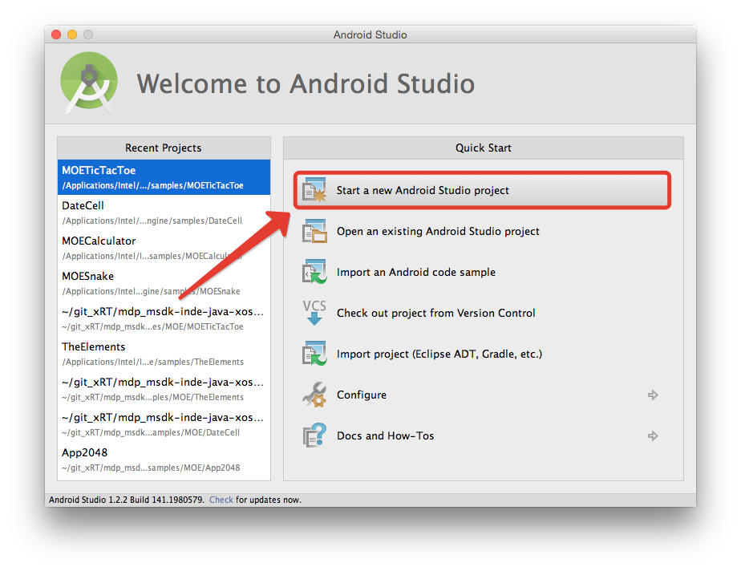Enter your Application name, Company Domain and choose a location where you want to save your project. Pay attention to the auto-generated package name which is in lower caps. Click Next. If you want to just get started, simply proceed with the default settings by clicking Next. Choose “Blank Activity” in the “Add an activity to Mobile” window and click Next. “In the Customize the Activity” window, you may wish to leave the settings unchanged. Click Finish to accept the default configuration.
At this point, Android Studio has created an Android project. In the Project pane, you will notice the “app” module. This module is your Android application. We will now proceed with adding a Multi-OS Engine module, which will eventually be your iOS application.
Right click anywhere inside “Project” tab on the left side. Regardless of place of clicks, the module will be created in the root of the Android project. Thereafter choose “New” and “Intel Multi-OS Engine Module”.
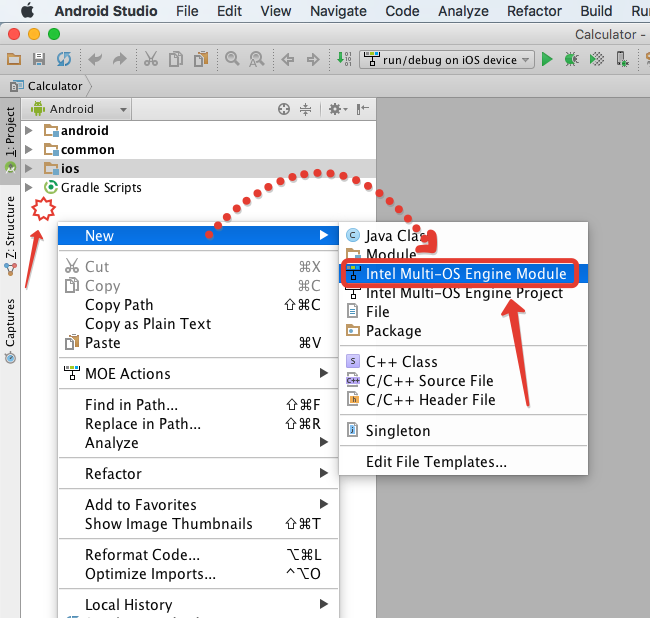There are seven available templates:
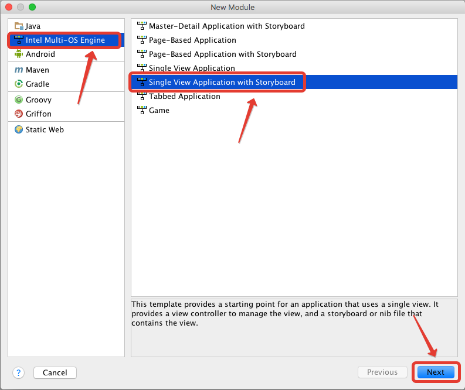- Master-Detail Application with storyboard template provides a starting point for a master-detail application. It provides a user interface configured with a navigation controller to display a list of items and also a split view on iPad.
- Page-Based Application template provides a starting point for a page-based application that uses a page view controller.
- Page-Based Application with storyboard template provides a starting point for a page-based application that uses a page view controller.
- Single-View Application template provides a starting point for an application that uses a single view. It provides a view controller to manage the view, and a storyboard or nib file that contains the view.
- Single-View Application with storyboard template provides a starting point for an application that uses a single view. It provides a view controller to manage the view, and a storyboard or nib file that contains the view
- Tabbed Application template provides a starting point for an application that uses a tab bar. It provides a user interface configured with a tab bar controller, and view controllers for the tab bar items.
- Game template provides a starting point for games.
These templates mirror the standard Xcode templates for iOS. These templates have the same names as the corresponding templates in Xcode. Some of these templates use storyboards, while others use generated storyboard from *.ixml files. Using these templates you can see how to migrate your Objective-C project to MOE solution. All Objective-C components are replaced with Java analogues when possible.
Select the template which fits your needs and press Next
In the next window, you will create an Xcode project. Later you can open the iOS project, created by Android Studio, in Xcode, especially if you would like to use Xcode’s storyboard to design your native user interface. Specify Xcode project name, product name (application name), organization and company ID.

Click Next to configure the iOS module and then click Finish.
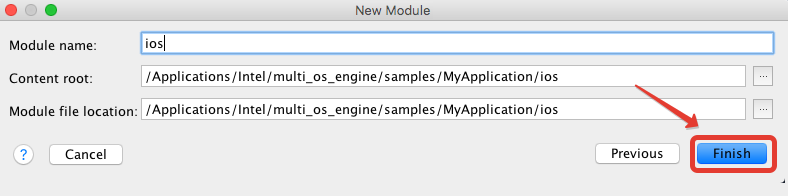Now we’ve created an iOS application in Android Studio. If Android Studio prompts you to synchronize the Gradle scripts, please do so.
Multi-OS Engine plugin automatically creates the default run configuration. Click “run button” to run sample on simulator by default or click “debug” to run debugging.
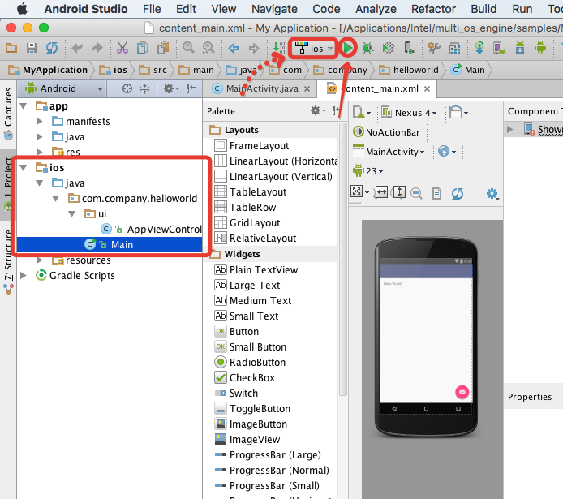To run the application on a physical device or change some parameters of the configuration, click on configuration and choose “Edit configuration”:
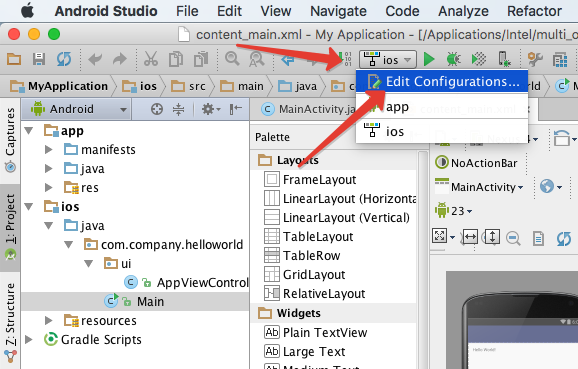Creating a common module for Android and iOS¶
This section describes how to create a “common” module which will hold our shared application logic and add it as a dependency to the iOS* and Android modules.
Let’s create common module from the scratch. Right click anywhere inside “Project” tab on the left side. Regardless of place of clicks, the module will be created in the root folder of the Android project. Then choose “New” and “Module”.
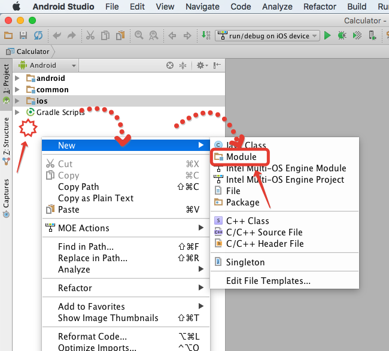Choose Java Library from modules list. Fill in the fields and click on “Finish” button
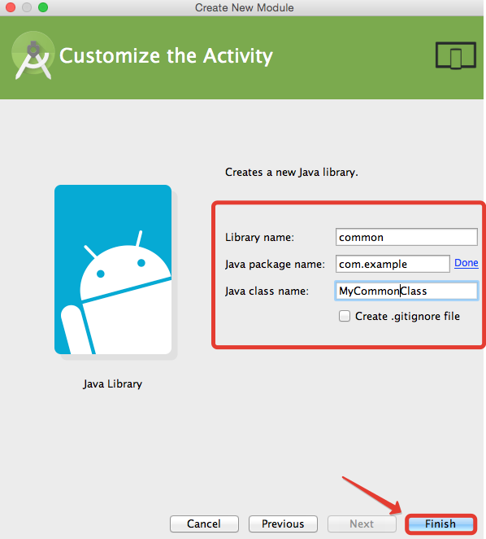Add common module as a dependency to the iOS and Android modules.
For iOS module: Right click on iOS module and choose “Open Module Settings” Choose iOS module in the “Project Structure” window. Click “+” and choose “Module dependency”
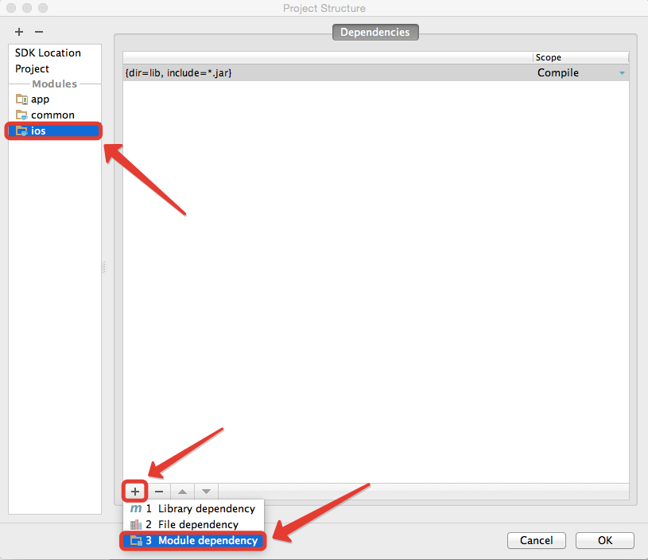Click on the common module from module list to add it as dependency for iOS module:
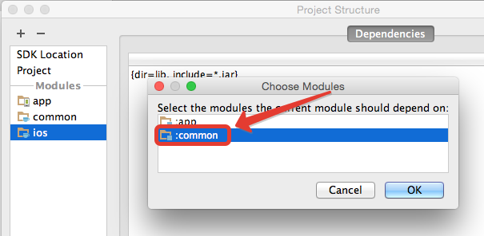For Android module:
Almost all steps are similar to the steps for iOS module. The only difference is that in the “Project structure” window it’s necessary to select the “Dependencies” tab.
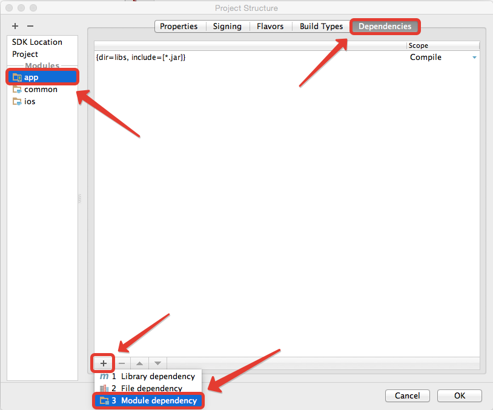How to build IPA to deploy application to AppStore¶
To create IPA file go to the “Build” tab and choose “Export IPA for Application” option:
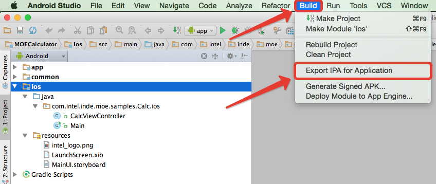Choose appropriate parameters in the popped up window and click “OK” to start build.

After a successful build the window below should appear. It informs where created IPA file is located and gives opportunity to reveal it in the Finder by clicking corresponding button.
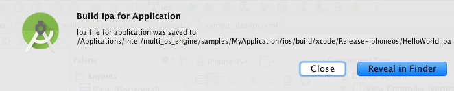